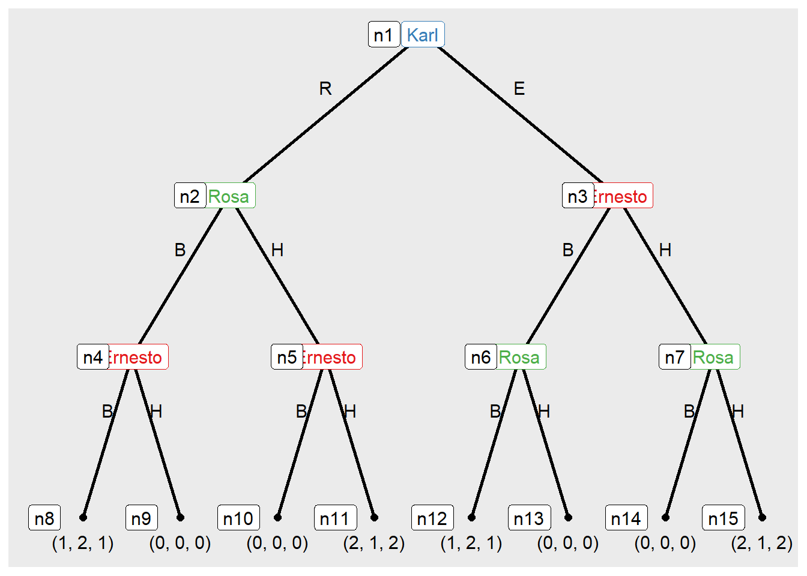

Capítulo8 Equilíbrio de Nash em Estratégias Mistas
Considere o jogo “cara” ou “coroa” a seguir. Nesse jogo, dois jogadores escolhem entre cara (heads) ou coroa (tails) ao mesmo tempo. Se as escolhas forem iguais, o Jogador 1 ganha um ponto. Caso contrário, o Jogador 2 ganha um ponto. O objetivo dos jogadores é maximizar sua pontuação.
library(knitr)
# Definindo a matriz de payoff
payoff.mat <- matrix(c(1, -1, -1, 1),
nrow = 2, ncol = 2,
dimnames = list(c("Cara", "Coroa"),
c("Cara", "Coroa")))
# Renderizando a tabela de payoff
kable(payoff.mat)| Cara | Coroa | |
|---|---|---|
| Cara | 1 | -1 |
| Coroa | -1 | 1 |
Esse jogo é similar ao de par ou ímpar, que estamos acostumados
Exercício 8.1: jogue par ou ímpar com outra pessoa por 5 rodadas.
library(knitr)
# Definindo a matriz de payoff
payoff.mat <- matrix(c(1, -1, -1, 1),
nrow = 2, ncol = 2,
dimnames = list(c("Par", "Ímpar"),
c("Par", "Ímpar")))
# Renderizando a tabela de payoff
kable(payoff.mat)| Par | Ímpar | |
|---|---|---|
| Par | 1 | -1 |
| Ímpar | -1 | 1 |
Após o jogo, podemos perceber que os jogadores possuem interesses opostos e vocês esperam que o outro não consiga antecipar o que você irá fazer. Nesse caso, ele será indiferente entre jogar qualquer uma de suas estratégias, pois esperar que, na média, ambas gerem o mesmo payoff médio.
Uma estratégia mista é justamente um antidoto contra as tentativas dos outros jogadores advinharem o que você irá fazer. Considere o jogo de tênis. No saque, se seu adversiário antecipar o que você irá fazer, ele terá uma vantagem. Então, você precisa jogar de um jeito que ele não consiga angtecipar ou advinhar suas estratégias.
Considere o seguinte jogo.
| C | D | |
|---|---|---|
| A | (4,25) | (12,5) |
| B | (16,10) | (8,15) |
É fácil ver que não há equilíbrio de Nash em estratégias puras. Vocês viram que no jogo do par ou ímpar, o ideal é jogar cada estratégia com 50% de chance. Vamos tentar colocar alguma probabilidade nesse jogo? Que tal 50% para cada estratégia também?
Vamos calcular o payoff (utilidade) esperado das novas estratégias, para poder preenhcer a nova matriz de payoff aumentada.
| C | D | 50% C, 50% D | |
|---|---|---|---|
| A | (4,25) | (12,5) | (8,15) |
| B | (16,10) | (8,15) | (12.00,12.50) |
| 50% C, 50% D | (10.00,17.50) | (10,10) | (10.00,13.75) |
Vamos calcular o Equilíbrio de Nash, se existe?
Novamente, não existe equilíbrio de Nash. Lembremos que estamos querendo deixar os jogadores indeferentes entre suas estratégias. Então, devemos procurar probabilidades que os deixem indiferentes. Isso significa que eles não poderão antecipar a estratégia do outro jogador se for um equilíbrio de Nash (é a melhor resposta simultaneamente).
Como achar essas probabilidades? O payoff esperado de jogar A e B, para o jogador 1 deve ser o mesmo, pois ele é indiferente dado o que o jogador 2 está fazendo. E a estratégia mista de 1 deve deixar 2 indiferente entre jogar C e D. Formalmente: Se 2 está misturando suas estratpegias para deixar 1 indiferente, então a utilidade esperada de 1 jogar A, dado que 2 está jogando C com probabilidade \(p_2c\) e D com probabilidade $ 1 - p_2c$, deve ser a mesma de 1 jogar B, dado que 2 está jogando C com probabilidade \(p_2c\) e D com o complemento.
Para o jogador 1, \(E[U(A)] = E[U(B)]\) e para o jogador 2, \(E[U(C)] = E[U(D)]\). Como calcular a utilidade esperada de jogar “A”? Suponha que o jogador 1 escolhe a com probabilidade \(p_1\), e B com probabilidade \(1-p_2\). Então:
\(E[U(A)] = p_2c*U(A| 2 joga C) + (1-p_2c)*U(A| dado 2 joga D ) = p_2c*4 + (1-p_2c)*12\)
\(E[U(A)] = p_2c*4 + 12 -p_2c*12 = 12 - 8*p_2c\)
\(E[U(B)] = p_2c*U(B| 2 joga C) + (1-p_2c)*U(B| dado 2 joga D ) = p_2c*16 + (1-p_2c)*8\)
\(E[U(B)] = p_2c*16 + 8 -8*p_2c = 8 + 8*p_2c\)
Se 1 está indiferente, então: \(E[U(A)] = E[U(B)]\)
\(12 - 8*p_2c = 8 + 8*p_2c\)
\(12 - 8 = 8*p_2c + 8*p_2c\)
\(4 = 16*p_2c\)
\(p_2c = 4/16\)
\(p_2c = 1/4\)
\(p_2d = 3/4\)
E agora fazemos a mesma coisa para o jogador 2. \(E[U(C)] = E[U(D)]\)
\(p_1a*U(C| 1 joga A) + (1-p_1a)*U(C| dado 1 joga B ) = p_1a*U(D| 1 joga A) + (1-p_1a)*U(B| dado 1 joga B )\)
\(p_1a*25 + (1-p_1a)*10 = p_1a*5 + (1-p_1a)*15\)
\(p_1a*25 + 10 -p_1a*10 = p_1a*5 + 15 - p_1a*15\)
\(p_1a*15 + 10 = 15 - p_1a*10\)
\(p_1a*25 = 5\)
\(p_1a = 5/25\)
\(p_1b = 4/5\)
Nossa matriz agora fica:
| C | D | 1/4 C, 3/4 D | |
|---|---|---|---|
| A | (4,25) | (12,5) | (10,10) |
| B | (16,10) | (8,15) | (10.00,13.75) |
| 1/5 C, 4/5 D | (13.60,13.00) | (8.80,13.00) | (10,13) |
Podemos ver, em primeiro lugar, que na nova matriz de payoff, 1 é indiferente entre jogar A, B ou sua estratégia mista de equilíbrio se 2 de fato está misturando suas estratégias C e D com as probabilidade de equilíbrio. Notem que ele sempre ganha 10.
Do mesmo jeito, 2 sempre ganha 13 se 1 está em sua estratégia mista. Por fim, vemos que ambas são estratégias de equilíbrio de Nash. E, nesse caso, a única estratégia mista (ou pura) de equilíbrio.
Vamos agora fazer o mesmo exercício para o jogo do par ou ímpar e para pedra, papel tesoura.
Aplicação em ciência política.
Suponha duas candidatas, 1 e 2, que devem decidir onde alocar seus dias finais de campanha, seja no estado A ou estado B, nos EUA. As pesquisas indicam que esses são os estados que podem decidir a batalha. Suponha que as probabilidades de cada candidata ganhar a eleição são dadas como segue:
| A | B | |
|---|---|---|
| A | (0.5,0.5) | (0.9,0.1) |
| B | (0.9,0.1) | (0.6,0.6) |
Vamos calcular o ENEM (Eq. Nash em Estratégias Mistas)?
Ambas vão para A com prob 3/7 (aprox. 0.43) e B com prob 4/7 (aprox. 0.57).
Agora, suponha que, antes de implementar essas estratégias, novas pesquisas saem e a probabilidade muda. Se 1 for para B sozinha, sua prob é .7 e não .9. Isso é conhecimento comum. Portanto, isso poderia nos levar a crer que ela deveria gastar mais tempo em A, ou aumentar a probabilidade de ir para A. Mas os novos equilíbrios indicam que 1 agora vai para A com pob 1/5 e visitar b com 4/5. Isso porque 2 vai mudar sua estratégia e aumentar a prob de visitar A (de 3/7 para 3/5). E se ambos vão para A, a prob de 1 ganhar é menor do que se ela for para B sozinha.
Esse tipo de coisa acontece com frequência em esportes. Um jogador veterano atacante se machuca e alguém das divisões de base entra no lugar. E aí, ele comeca a receber mais passes e tem mais oportunidades de gol e, por isso, marca mais gols do que o veterano. Ocorre que, como ele tem menos chance de criar jogadas e fazer gols, é melhor deixar ele mais livre e marcar outros jogadores. Isso aumenta a chance de gol do novato, mas diminui a de todos os outros jogadores. Então, embora ele esteja marcando mais gols que o veterano, o time no geral estará com desempenho pior.
8.1 Pedra-papel-tesoura
Considere o jogo pedra-papel-tesoura. Assuma que vencer gera um payoff de 1, empate 0 e perder de -1. A matriz de payoff pode ser representada do seguinte modo:
| Pedra | Papel | Tesoura | |
|---|---|---|---|
| Pedra | (0,0) | (-1,1) | (1,-1) |
| Papel | (1,-1) | (0,0) | (-1,1) |
| Tesoura | (-1,1) | (1,-1) | (0,0) |
A correspondência de melhor resposta do jogador 1 para suas crenças a respeito do jogador 2 pode ser escrita da seguinte forma: \(s_1(s_2) =\) Papel quando \(s_2 = Pedra\) \(s_1(s_2) =\) Tesoura quando \(s_2 = Papel\) \(s_1(s_2) =\) Pedra quando \(s_2 = Tesoura\)
E de maneira análoga para o jogador 2. É fácil ver que não existe equilíbrio de Nahs em estratégias puras nesse jogo. Raciocínios do tipo: “se ele acha que vou jogar pedra, então ele jogará papel, de forma que devo jogar tesoura. Porém, se ele antecipar isso, ele jogará pedra, de forma que devo jogar papel. Mas ele pode antecipar isso também e jogar tesoura, mas aí eu jogo pedra…” leva a uma regressão que nunca terminará. Em certo sentido, tanto faz o que você joga, porque não é possível advinhar o que você o outro jogador irá fazer. Mas dizer tanto faz pode ser pensado como se você aleatorizasse e jogasse cada uma das três ações com a mesma probabilidade \(1/3\), e o mesmo o jogador 2. Nesse caso, dizemos que os jogadores estão jogando uma estratégia mista. Neste caso em particular, joga cada uma das t^Res ações com probabilidade \(1/3\).
Definição do Ronaldo Fiani (p. 192):
Quando, em vez de escolher entre suas estratégias uma dada estratégia para jogá-la com certeza, um jogador decide alternar entre suas estratégias aleatoriamente, atribuindo uma probabilidade a cada estratégia a ser escolhida, diz-se que o jogador utiliza estratégias mistas. Caso contrário, diz-se que emprega estratégias puras.
Nós vamos definir estratégias mistas da seguinte forma: Se o conjunto de estrartégias disponíveis para um jogador é \(S = (s_1, s_2, ..., s_m)\), então uma estratégia mista para aquele jogador é uma loteria sobre \(S\), \(p = (p_1, p_2, ..., p_m)\). Diz-se que o jogador escolheu a estratégia \(p\) se ele usa esta loteria para determinar qual estratégia pura irá implementar no jogo.
Em outras plavras, uma estratégia mista é uma distribuição de probabilidade que determina como uma estratégia pura será jogada por meio da realização dessa distribuição.
Definição 8.1. Se um conjunto de estatégias disponíveis para um jogador é \(S = {s_1, s_2, ..., s_n}\), então uma estratégia mista para aquele jogador é uma loteria sobre \(S\), \(p = (p_1, p_2, ..., p_n)\). Diz-se que o jogador escolhe essa estratégia \(p\) se ele usa essa loteria para determinar que estratégia pura irá implmentar quando de fato jogar o jogo.
8.2 Exercícios
Exercise 8.1 Qual o equilíbrio de Nash em Estratégias Mistas (ENEM) do Dilema do Prisioneiro?
Exercise 8.2 Qual o equilíbrio de Nash em Estratégias Mistas (ENEM)do jogo do Chicken??
Exercise 8.3 Considere o seguinte jogo representado na forma estratégica:
| Esquerda | Centro | |
|---|---|---|
| Alto | (3,3) | (3,3) |
| Baixo | (3,3) | (3,3) |
- Existe algum equilíbrio de Nash em Estratégias Puras (ENEP)? Se sim, qual (ou quais)?
- Quantos equilíbrios de Nash em estratégias mistas existem?
::: {.exercise #unnamed-chunk-49}
Considere o seguinte jogo representado na forma estratégica:
:::
| |A |B |C |
|:--|:------|:-----|:------|
|A |(4,4) |(0,5) |(-1,0) |
|B |(5,0) |(1,1) |(0,0) |
|C |(0,-1) |(0,0) |(1,1) |
a) Existe algum equilíbrio de Nash em Estratégias Puras (ENEP)? Se sim, qual (ou quais)?
b) Existe ENEM em que os jogadores aleatorizam entre A e B? Explique.
c) Existe ENEM em que os jogadores aleatorizam entre B e c? Explique.
Exercise 8.4 Uma funcionária (jogadora 1) que trabalha para uma chefe (jogadora 2) pode tanto trabalhar (T) quanto enrolar (E), enquanto sua chefe pode tanto monitorar a funcionária (M) quanto ignorá-la (I). Como em muitos relacionamentos entre funcionária e chefe, se a funcionária estiver trabalhando, a chefe prefere não monitorá-la, mas se a chefe não estiver monitorando, a funcionária prefere enrolar. A matriz de payoff abaixo representa uma situação como essa.
| M | I | |
|---|---|---|
| T | (1,1) | (1,2) |
| E | (0,2) | (2,1) |
- escreva a fução de melhor resposta de cada jogadora (isto é, para a jogadora 1, qual probabilidade \(p\) ela deve escolher para cada possível escolha de probabilidade \(q\) da jogadora 2).
- qual o equilíbrio de Nash do jogo?
::: {.exercise #unnamed-chunk-52}
Qual o equilíbrio de Nash em Estratégias Mistas (ENEM) do Dilema do Prisioneiro?
:::
## Referências
Gauriot, R., Page, L., & Wooders, J. (2023). Expertise, gender, and equilibrium play. Quantitative Economics, 14(3), 981-1020.
<!--chapter:end:08-ENEM.Rmd-->
# Jogos Dinâmicos
## Introdução
Considere novamente o jogo Bach e Stravinsky. Suponha que a jogadora 1 joga primeiro e e a jogadora 2 pode observar a esoclha de 1. Imagine que ela vai para um lugar, liga para a amiga e diz: estou aqui no lugar tal (espetáculo do Bach ou do Stravinsky).
Veja que em termos de equilíbrios de Nash, continuamos com os mesmos dois equilíbrios de antes. Porém, não faz sentido achar que o equilíbrio (S,S) será jogado, pois a jogadora 1 sabe que, se for para Bach, 2 também irá. Jogos na forma normal não capturam muito bem a noção de jogos sequenciais e racionalidade sequencial.
A forma estratégica do jogo, de fato, não traz informações nem sobre a ordem dos movimentos, nem as ações disponíveis para cada jogadora na sua vez de jogar.
Por isso, iremos alterar a representação de nosso jogo, para a forma extensiva, que tornará explícito **a ordem** em que as jogadoras jogam, e o que cada jogadora **sabe** quando é sua vez de jogar. Nesse cenário, estratégias referem-se a planos contingentes de ações (como no jogo da bandeira), em vez de ações não-contigentes.
Iremos introduzir a noção de indução reversa ou indução para trás como uma forma de solucionar jogos. Noção que for formalizada por Selten (1965) como equilíbrio de subjogo-perfeito e contempla situações em que jogadoras se movem simultaneamente em múltiplos períodos e a indução reversa não pode ser aplicada.
Comecemos então pela introdução do que significa descrever um jogo na forma extensiva.
## Jogo na forma extensiva
Um jogo na forma extensiva pode ser visto como uma generalização multi-estágio de árvores de decisão.
<div class="figure">
<img src="imagens\jogo-extensivo.png" alt="Representação do Jogo da coordenação" width="100%" />
<p class="caption">(\#fig:bach-strav)Representação do Jogo da coordenação</p>
</div>
A árvore do jogo é lida de cima para baixo. No topo está quem joga primeiro. O retângulo com o nome da jogadora é chamado de nó. No primeiro nó, Serena tem duas ações possíveis, "Bach" e "Stravinski". Uma vez que ela escolha sua ação, é a vez da Nina, que também tem duas opções ("bach" e "stravinsky", em caixa baixa, para distinguir as ações das duas jogadoras). Se Serena escolheu Bach, Nina está no galho da esquerda. Se Serena escolheu Stravinsky, Nina está no galo da direita. E uma vez que Nina faça sua escolha, o jogo acaba e os payoffs finais são mostrados. O primeiro payoff é da jogadora 1, e o segundo da jogadora 2.
Assim, com a forma extensiva, temos como antes:
1. Número de jogadoras, $N$.
2. Payoffs ou funções de utilidade em função dos resultados, $\{u_i(\cdot)\}_{i \in N}$
E acrescentamos:
3. Ordem dos movimentos
4. Ações das jogadoras quando for a vez delas de se moverem.
5. O conhecimento que as jogadoras possuem quando é sua vez de se moverem.
O ponto 5 é importante para distinguir entre Nina joga depois da Serena de um lado, e Nina joga depois da Serena sabendo o que Serena jogou antes dela.
Por fim, mantemos uma suposição feita em nossos jogos anteriores, agora estendida aos itens 1-6, que é:
7. É conhecimento comum toda a estrutura do jogo representada pelos itens 1-6 para todas as jogadoras.
### Definição de árovre de um jogo
Uma **árvore do jogo** é formada por um conjunto de nós $x \in X$ com uma relação de precedência $x > x'$, que significa "$x$ precede a $x'$". Ou seja, $x$ vem antes de $x'$. Cada nó só tem um predecessor. A relação de precedência é transitiva ($x > x', x' > x'' \implies x > x''$), assimetrica $(x > x' \implies \neg (x' > x))$, isto é, $x$ precede $x'$, mas $x'$ não precede $x$, e incompleta (nem todos os pares podem ser ordenados). Há um nó especial, chamado raiz da árvore, denotada por $n_1$, que precede quaisquer outros nós $x \in X$. Nós que não precedem outros nós são chamados de nós terminais, denotados pelo conjunto $Z \subset X$. Nós terminais denotam o fim do jogo, com os payoffs associados. Cada nó $x$ que não é terminal é atribuído a um jogador $i(x)$ com o conjunto de ações $A_i(x)$, ou para natureza.
É uma definição longa, masque captura a estrutura "física" do jogo, ao mesmo tempo em que ignora as ações (escolhas) das jogadoras e o que sabem quando jogam.
## Jogo da confiança
<div class="figure">
<img src="imagens\jogo-confianca.png" alt="Representação do Jogo da Confiança" width="100%" />
<p class="caption">(\#fig:confianca)Representação do Jogo da Confiança</p>
</div>
O jogador p1 joga primeiro. Logo, $i(n_1) = p_1$.
## Informações
Quais informações cada jogador tem quando é sua vez de jogar? Uma jogadora pode ter informação bem fina sobre onde está no jogo, ou bem grosseira. Vamos então introduzir a seguinte definição:
Definição conjunto de informações:
Cada jogador $i$ tem uma coleção de conjuntos de informação $h_i$ the particiona (divide) os nós do jogo no qual uma jogadora $i$ move com as seguintes propriedades:
1. Se $h_i$ é uma conjunto unitário (*singleton*) que inclui apenas $x$, então a jogadora $i$ que se move em $x$ sabe que está em $x$.
2. Se $x \neq x'$ e se ambos $x \in h_i$ e $x' \in h_i$ então a jogadora $i$ que se move em $x$ não sabe se está em em $x$ ou $x'$.
3. Se $x \neq x'$ e se ambos $x$ e $x' \in h_i$, então $A_i(x) = A_i(x')$.
Vamos entender esta definição formal. Considere novamente o jogo do Bach e Stravinsky na forma extensiva.
<div class="figure">
<img src="imagens\jogo-extensivo2.png" alt="Representação do Jogo da coordenação simultâneo" width="100%" />
<p class="caption">(\#fig:bach-strav-simultaneo)Representação do Jogo da coordenação simultâneo</p>
</div>
No gráfico 9.1. temos $x_1$, $x_2$... como nós. Considere quando a jogadora Nina se move em $x_1$. A questão é: ela sabe que está em $x_1$? Ou não sabe se está em $x_1$ ou $x_2$? Se a gente escreve $h_2 = {x_2}$, então isso significa que o conjunto de informações em $x_1$ é um conjunto unitário. Portanto, a jogadora a jogadora possui informação que diz "estou em x_2", que é capturado pela propriedade 1 da definição. Nesse caso, segue-se que a jogadora 2 também tem outro conjunto de informação $h_2 = {x_3}.
Se, por outro lado, Nina não sabe se está em $x_1$ ou $x_2$, como no jogo do Bach e Stravinsky simultâneo (figura 9.3), então deve ser verdade que sua informação é de que está em $x_1$ ou $x_2$, mas não sabe em qual dos dois. Nesse caso, escrevemos $h_2 = {x_1, x_2}$. Esta é a propriedade 2.
Finalmente, a propriedade 3 é essencial para manter a lógica da informação, em particular quando as ações disponíveis em cada nós forem diferentes para uma jogadora. Considere o jogo da confiança. Se ela não sabe se está no nó $x_1$ (onde o jogo terminou e não tem o que fazer) ou $x_2$, então ela não pode saber quais as ações disponíveis para ela.
Por fim, em alguns casos é possível acrescentar eventos aleatórios. Por exemplo, o jogo acima poderia ser modificado para incluir a chance de chover. Suponha que o espetáculo de Bach é a céu aberto, e o de Stravinski, não. Então, se choveu os payoffs das jogadoras é diferente de se não choveu. Vamos supor que elas preferem ficar juntas sob chuva que separadas. Como representar essa possibilidade? A forma como fazemos isso é criar uma jogadora fictícia, que é a natureza, que joga aleatoriamente sem considerações estratégicas. Essa probabilidade é exógena, no sentido de que é fixa e determinada antes do jogo começar, de modo que não depende das escolhas das jogadoras.
Eis como ficaria o jogo nesse caso:
<div class="figure">
<img src="imagens\jogo-bofsex-nature.png" alt="Representação do Jogo da coordenação, com a natureza movendo primerio" width="100%" />
<p class="caption">(\#fig:bach-strav-natureza)Representação do Jogo da coordenação, com a natureza movendo primerio</p>
</div>
Na \@ref(fig:bach-strav-natureza), temos algumas mudanças. O primeiro nó está representado por um círculo vazado, para indicar que é a natureza quem está jogando (e não terá um payoff). Os demais nós são representados por círculos prreenchidos, sólidos. Portanto, a natureza joga e "escolhe" se fará sol ou chuva. Na prática as leis da natureza irão operar, e podemos calcular probabilidades (no caso, 50% de chance de chover), mas a jogadorta Serena só sabeá se haverá sol ou chuva na hora do espetáculo, após ter feito sua jogada. Isso significa que Serena não sabe em qual nós está, se no da esquerda, com chuva, ou no da direita, com sol. Para indicar essa ausência de informação, é comum circularmos com uma linha tracejada os nós nos quais uma jogadora não tem informação sobre qual nó ela está. Uma vez que Serena Joga, é a vez de Nina jogar. Note que não circulamos nós de Nina com linha tracejada, de modo que isso significa que Nina sabe em qual nó está, ou seja, sabe não apenas o que Serena jogou, mas o que a natureza jogou. Como é difícil imaginar tal situação, o melhor seria indicar também que Nina não sabe o que a Natureza jogou, mas sabe o que a Serena jogou. A árovre do jogo ficartão então.
<div class="figure">
<img src="imagens\jogo-bofsex-nature1.png" alt="Representação do Jogo da coordenação, com a natureza movendo primerio, conjunto de informações corretos." width="100%" />
<p class="caption">(\#fig:bach-strav-natureza1)Representação do Jogo da coordenação, com a natureza movendo primerio, conjunto de informações corretos.</p>
</div>
Nessa árvore, vale destacar dois aspectos que são diferentes da árvore anterior. Em primeiro lugar, nós descrevemos a informação completa sobre em qual nó Nina está por meio de linha tracejada curva. Poderíamos ter usado o círculo tracejado, que daria na mesma. São duas formas distintas de representar a mesma coisa e estamos incluindo aqui para fins de completude. Em segundo lugar, note os nós que estão conectados pela linha. Quando é a vez de Nina jogar, ela não sabe o que a natureza jogou, mas sabe o que Serena jogou. Isso significa que se Serena jogou "Bach", Nina não sabe se está no ramo "Bach" com chuva ou no ramo "Bach" som sol. Similarmente, se Serena jogou "Stravinski", Nina não sabe em qual dos dois galhos de "Stravinski" ela está. É preciso, portanto, ter cuidado quando conectar nós, pois se fizemos errado, o jogo fica completamente outro.
## Jogos de informação perfeita e imperfeita
Os jogos na forma normal eram chamados de jogos de informação completa, pois todas as jogadores conheciam as ações disponíveis e as funções de payoff de todas as jogadoras, e isso era conhecimento comum.
Agora, nós temos uma situação em que uma jogadora pode ter conhecimento perfeito ou imperfeito do nó em que está, a depender do particionamento do conjunto de informações. Portanto, vale a pena distinguir entre dois tipos de jogos de informação completa.
Definição: Um jogo de informação completa no qual cada conjunto de informação é um conjunto unitário e não há jogadas da natureza é chamado um **jogo de informação perfeita**. Um jogo no qual pelo menos um conjunto de informação contém vários nós ou um jogo com movimentop da natureza é chamado um **jogo de informação imperfeita**.
## Estratégias
Nós já havíamos definido uma estratégia como um plano de ação contigente. Contudo, em jogos na forma normal, essa definição era pouco útil, pois estratégias (puras) coincidiam com as ações disponíveis para as jogadoras. Na forma externsiva, a nossa definição de estratégia se revelará mais útil.
### Estratégias puras
Consideremos novamente o jogo sequencial Bach-Stravinski na sua forma mais simples, representado pelo gráfico 9.1. Serena é a primeira a jogar e seu conjunto de informação possui apenas um nó e para ela uma estratégia pura é tão simples quanto jogar B ou S. Para Nina, a situação é um pouco mais complexa, posto que ela possui dois conjuntos de informação, um para cada estrarégia de Serena. Portanto, não basta dizer que as duas ações B e S são as estratégias de Ninas.
**Estratégias Puras em Jogos na forma Extensiva**: Uma **estratégia pura** para a jogadora $i$ é um plano completo de ação que descreve qual ação a jogadora $i$ escolherá em cada um de seus conjuntos de informação.
No jogo Bach-Stravinski 9.2, vemos que a estratégia de Serena é apenas $\{\text{Bach},\text{Stravinski}\}$, e a de nina, $\{\text{B},\text{S}\}$, pois ambas as jogadoras possuem apenas um conjunto de informação. Em outras palavras, o jogo na forma extensiva é idêntico ao jogo na forma estratégica. Já no jogo sequencial, como vimos, Nina tem dois con juntos de informação disintos no qual ela pode escolher entre duas ações (B,S), a depender de qual foi o movimento de Serena. Portanto, um plano completo de ação para Nina deve ter instruções do que fazer para cada escolha de Serena.
A escolha do conjunto de ações $\{\text{B},\text{S}\}$ deve ser contigente ao que Serena escolheu, do tipo: "Se Serena escolher Bach, escolha B", ou "Se Serena escolher Bach, Nina escolherá S, já se Serena escolher Stravinski, Nina escolherá S" e assim por diante. Para resumir, descreveremos o conjunto de estratégias da seguinte forma:
$$
S_{\text{Nina}} = \{BB, BS, SB, SS\}
$$
Assim, a estratégia $BB$ quer dizer, jogue B se Serena escolher Bach, e jogue B se Serena escolher Stravinski. Por outro lado, $BS$ quer dizer, jogue B se Serena escolher Bach, e jogue S se Serena escolher Stravinski, e assim por diante. Para Serena, o conjunto de estratégias continua $S_{\text{Serena}} = \{Bach, Stravinski\}$.
Agora podemos definir formalmente o que é uma estratégia pura, se adotarmos algumas notações específicas. Seja $H_i$ a coleção de todos os conjuntos de informação no qual a jogadora $i$ joga, e seja $h_i \in H_i$ um dos conjuntos de informação de $i$. Seja $A_i(h_i)$ as ações que a jogadora $i$ pode tomar em $h_i$, e seja $A_i$ o conjunto de todas as ações da jogadora $i$, $A_i = \cup_{h_i \in H_i}A_i(h_i)$, isto é, a união de todos os elementos em todos os conjuntos $A_i(h_i)$.
Definição 9.3: Uma estratégia pura para uma jogadora $i$ é um mapeamento $s_i:H_i \rightarrow A_i$ que atribui uma ação $s_i(h_i) \in A_i(h_i)$ para todo conjunto de informação $h_i \in H_i$. Denotamos por $S_i$ o conjunto de todos os mapeamentos de estratégias puras $s_i \in S_i$.
### Estratégias mistas
## Estratégias comportamentais
Definição: perfect recall (memória perfeita)
## Representação estratégica de jogos na forma extensiva
## Equilíbrio de Nash e Caminhos de jogada
Definição: ... um conjunto de informação está **no caminho de equilíbrio** se ...
<!--chapter:end:09-Jogos-dinamicos.Rmd-->
# Credibilidade e racionalidade sequencial
## Introdução
## Racionalidade sequencial e indução reversa
Contudo, quando o jogo é de informação imperfeita, não podemos aplicar a indução reversa. Caso em que é mais vantajoso usar uma formalização desenvolvida por Selten (?, ano?). Antes, vamos introduzir a noção de subjogo.
## Subjogo
Subjogo de um jogo extensivo com informação perfeita
Um subjogo é qualquer parte de um jogo na forma extensiva que satisfaz as seguintes condições:
1. Sempre se inicia em um único nó de decisão
2. Não está em um nó terminal
3. Contém todos os nós que se seguem após ele
Em um jogo de informação imperfeita, acrescentamos:
4. Se contiver qualquer nós de um conjunto de informação, ele conterá todos os nós do conjunto de informação.
Nós chamamos de subjogo próprio todos os subjogos que não são a árvore do jogo na sua totalidade.
## Equilíbrio de Nash Perfeito de Subjogo
## Exercícios
Ache todos os subjogos do jogo abaixo.
8.5 Keep up to date with changes at https://www.tidyverse.org/blog/
```
Modelo o jogo como uma árvore (forma extensiva) e ache todos os subjogos do jogo abaixo. (exercício 156.2c do Osborne).
Os políticos Rosa e Ernesto precisam tomar uma posição sobre um assunto. As opções são Berlim (B) ou Havana (H). Eles escolhem sequencialmente. Uma terceira pessoa, Karl, determina quem escolhe primeiro. Tanto Rosa quanto Ernesto se importam apenas com as ações que escolhem, não com quem escolhe primeiro. Rosa prefere o resultado em que ambos escolhem B ao resultado em que ambos escolhem H, e prefere esse resultado a qualquer um dos casos em que ela e Ernesto escolhem ações diferentes; ela é indiferente entre esses dois últimos resultados. As preferências de Ernesto diferem das de Rosa no sentido de que os papéis de B e H são invertidos. As preferências de Karl são as mesmas que as de Ernesto. Modele essa situação como um jogo extensivo com informação perfeita. (Especifique os componentes do jogo e represente o jogo em um diagrama.)

Existem 6 subjogos próprios e 7 subjogos no total, contando o jogo inteiro como um subjogo.
Equilíbrio de Nash Perfeito em Subjogos
Definição informal: Um equilíbrio perfeito em subjogos é um perfil estratégico \(s^*\) com a propriedade de que, em nenhum subjogo, qualquer jogador \(i\) pode se sair melhor escolhendo uma estratégia diferente de \(s^*_i\), dado que todos os outros jogadores \(j\) aderem a \(s^*_j\).
Nessa definição (informal), requeremos que a estratrégia de cada jogadora seja ótima para toda história após ser a vez dela jogar, e não apenas no início do jogo, como no equlíbrio de Nash.
Todo jogo extensivo finito com informação perfeita possui (pelo menos) um equilíbrio perfeito de subjogo.
Um jogo finito significa que em nenhum momento um jogador possui infinitas opções de ações. Para dar um exemplo trivial (do Osborne): um único jogador escolhe um número menor que 1 e recebe um pagamento igual ao número que ela escolhe. Não há um número maior que todos os outros números menores que um, então o jogador único não possui uma ação ótima, e assim o jogo não possui um equilíbrio perfeito de subjogo.